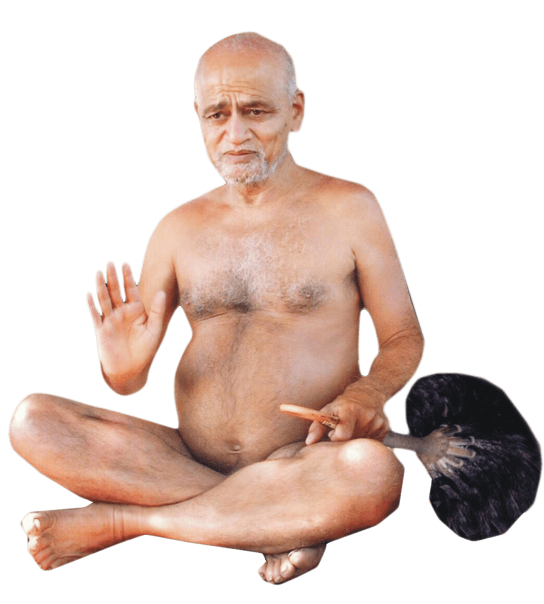
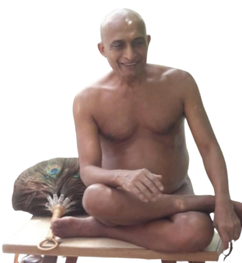
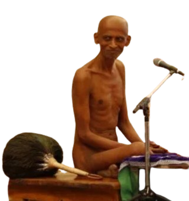
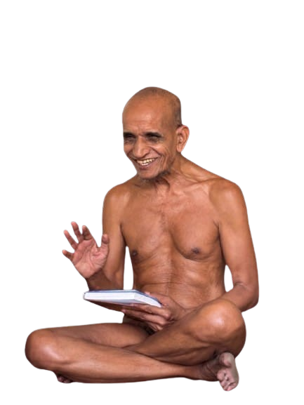
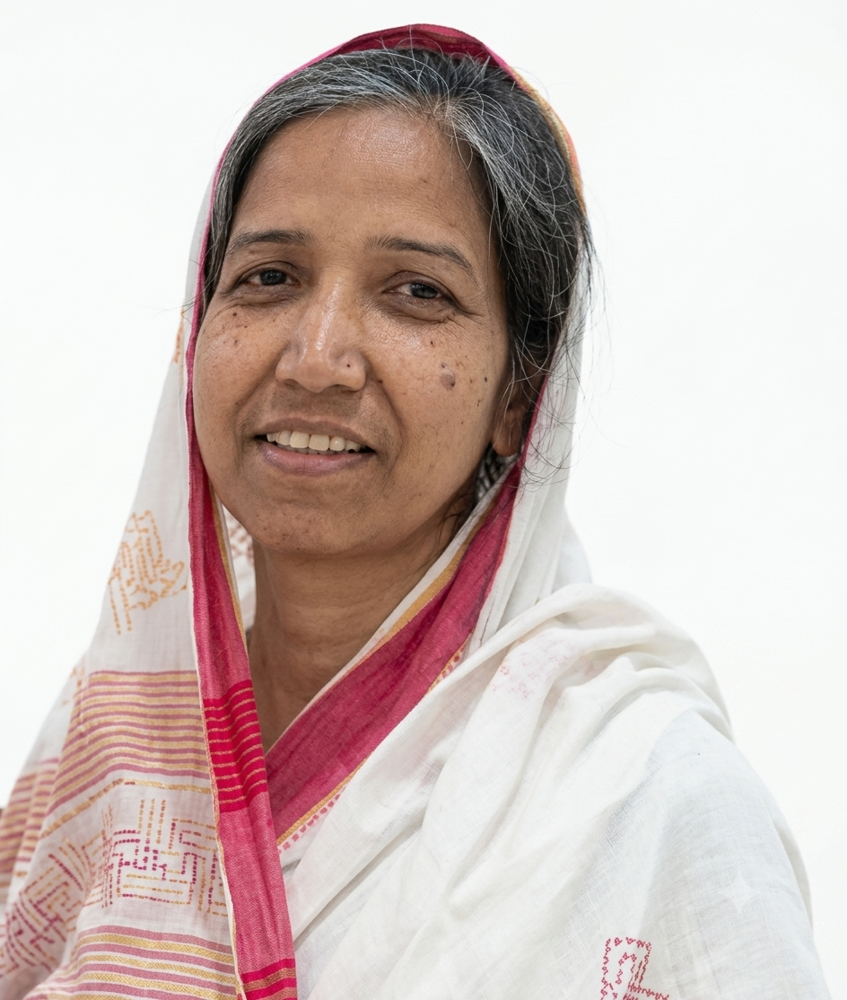

श्री महावीराय नमः

मंगल आशीर्वाद एवं मार्गदर्शक

प्रेरणा एवं मार्गदर्शन



आधार स्तम्भ
आधार स्तम्भ एवं वर्तमान में क्रियाशील

संस्था की ऐतिहासिक पृष्ठभूमि और विकास यात्रा
पुणे महानगर जो कि भारत देश का एक बहुत बड़ा IT Hub है, यहाँ प्रति वर्ष हजारों-लाखों इंजीनियर ग्रेजुएट्स जॉब के लिए आते हैं। इन्हीं लाखों इंजीनियर्स की भीड़ में से कुछ धर्मप्रेमी नवयुवकों के अनथक प्रयासों से इस महान संघ की नींव रखी गई।
कुछ धर्म प्रेमी नवयुवकों के मन के अंदर जैन धर्म प्रभावना का दृढ़ संकल्प और सम्पूर्ण जैन समाज पुणे को एक साथ जोड़ने का जुनून जागा। इन युवाओं ने श्री चन्द्रप्रभु जिनालय, गुरुवार पेठ में नियमित स्वाध्याय करना प्रारम्भ किया और वहीं से एक विशाल संघ की नींव रखी जाने लगने लगी।
श्री दिगंबर जैन मंदिर, माणिकबाग में इन युवाओं को चतुर्थ काल की चर्या का अक्षरशः पालन करने वाले मुनि श्री विनीत सागर जी महाराज और मुनि श्री चन्द्रप्रभ सागर जी महाराज का परम सानिध्य मिला। दोनों युगल महाराज ने इन युवाओं पर अपने वात्सल्य की वर्षा करते हुए संघ को "जैन संघ पुणे" (Jain Sangh Pune) के नाम से पंजीकृत (Register) करने की दिव्य प्रेरणा प्रदान की।
पुणे की धरा पर पहली बार वात्सल्य मूर्ति मुनि श्री अक्षय सागर जी महाराज का मंगल आगमन हुआ। उनके कुशल मार्गदर्शन और प्रेरणा से पुणे के सभी जैन धर्मावलंबियों को एक साथ एक मंच पर लाने का अभूतपूर्व प्रकल्प शुरू हुआ। इसी दौरान एक आदर्श जैन सोसाइटी की योजना बनाई गयी जहाँ भव्य जैन मंदिर के साथ सैकड़ों जैन परिवार एक साथ रहकर निरंतर जैन धर्म के मार्ग पर आगे बढ़ सकें।
मुनि श्री नियम सागर जी महाराज का पुणे में आगमन हुआ। जैन संघ पुणे के युवाओं में मुनि सानिध्य पाने की ललक और मुनि सेवा के अगाध भाव को देखकर मुनि श्री नियम सागर जी महाराज ने इन युवाओं को कई नियमों से संवारा। उन्होंने युवाओं को मोक्ष मार्ग चुनकर उस पर कदम आगे बढ़ाने की परम प्रेरणा दी। मुनि श्री के पावन आशीर्वाद और प्रेरणा से बाल ब्रह्मचारी भैया और दीदी लोगों का एक बहुत बड़ा आध्यात्मिक समूह तैयार हुआ। इसके अलावा कई गृहस्थों ने उच्च प्रतिमा व्रत धारण कर समाज के सामने उत्कृष्ट उदाहरण प्रस्तुत किया।
वर्ष 2015 में तीन जैन सोसाइटी का परिसर में जिनालय के साथ निर्माण पूर्ण हुआ|
• श्री सुस दिगंबर जैन मंदिर : ज्ञानोदय दिगंबर जैन सोसाइटी, सुस
• श्री आदिनाथ दिगंबर जैन मंदिर : वीरोदय, खराड़ी
• श्री सुपार्श्वनाथ दिगंबर जैन मंदिर : ड्रीम्स वीरोदय, खराड़ी
इसके अलावा इसी वर्ष तमिलनाडु के विभिन्न क्षेत्रों में स्थित प्राचीन जैन मंदिरों के जीर्णोद्धार और
संरक्षण का कार्य शुरू किया गया।
तीर्थ यात्रायें :
• शिखर जी : 120 यात्री
• अष्टापद : 108 यात्री
• गिरनार जी : 56 यात्री
कोनकोंडला(आचार्य कुंद कुंद देव की जन्म भूमि) में क्षेत्र के संरक्षण के उद्देश्य से विशाल अहिंसा
रैली जिसमें 500 से अधिक लोगो ने हिस्सा लिया।
कलगी, गुलबर्गा के मंदिरों का संरक्षण कार्य और विशाल अहिंसा विद्या पद यात्रा जिसमें 1000 से अधिक लोगो ने हिस्सा लिया का आयोजन।
1.30 करोड़ रुपये की खाद्य सहायता:
वर्ष 2019 में सांगली एवं कोल्हापुर में आई भीषण बाढ़ से पीड़ित संकटग्रस्त परिवारों को सीधे उनके घर-घर
जाकर खाद्य सामग्री की आवश्यक किटों का पारदर्शी व तीव्र वितरण सुनिश्चित कराया गया।
₹2.5 करोड़ से अधिक का राहत समर्पण (कोरोना काल):
महामारी के संकट काल में जैन संघ पुणे द्वारा सीधे करीब 7,000 से अधिक परिवारों तक त्वरित पहुंच बनाकर
उनकी बुनियादी व आपातकालीन आवश्यकताओं को पूरा किया गया।
इस संकट काल में कुल ₹2.5 करोड़ की विशाल निधि को प्रत्यक्ष राहत, आर्थिक मदद, औषधि, खाद्यान्न सुरक्षा
तथा स्वरोजगार के साधनों के रूप में समाज कल्याण हेतु पूर्ण पारदर्शिता से व्यय किया गया।
इसके अलावा, 700 से अधिक विधवाओं को पेंशन पहुँचाना, 50+ आर्थिक रूप से कमजोर छात्रों को छात्रवृत्ति
प्रदान करना एवं वर्ष 2022 से प्रति वर्ष सराक क्षेत्र में जाकर जिन धर्म श्रावक संस्कार शिविर लगाया जा
रहा है।
सुस दिगंबर जैन मंदिर का निर्माण कार्य पूर्ण और निर्यापक श्रमण श्री 108 वीर सागर जी महराज के मंगल सानिध्य में भव्य ऐतिहासिक पञ्च-कल्याणक सम्पन्न हुआ|
सुस में श्री दिगंबर जैन मंदिर के पास विद्या शांति निलय नाम से 6 मंजिला संत निवास-यात्री निवास-समाधि भवन का कार्य प्रारंभ हुआ|
JSP Founders